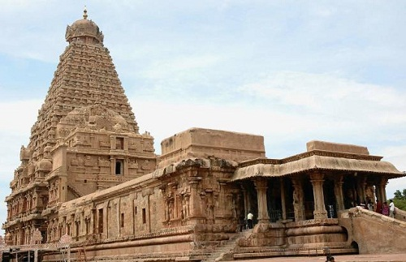

Brihadeswara Temple, Tamil Nadu
Brihadeswara Temple is located in Thanjavur in Tamil Nadu and is dedicated to Lord Mahadev. It is one of the most visited Shiva temples in the country and also a UNESCO World Heritage Site. It is known to have one of the tallest temple towers in the world. The temple also houses a huge monolithic statue of Nandi.